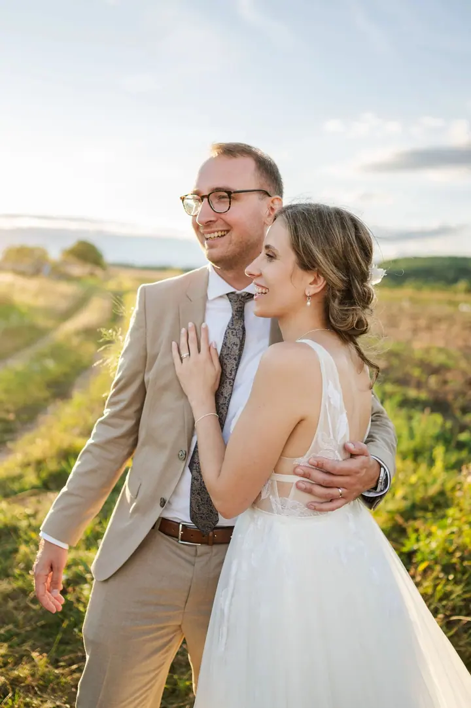
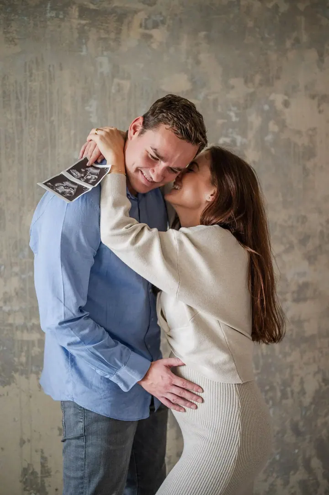
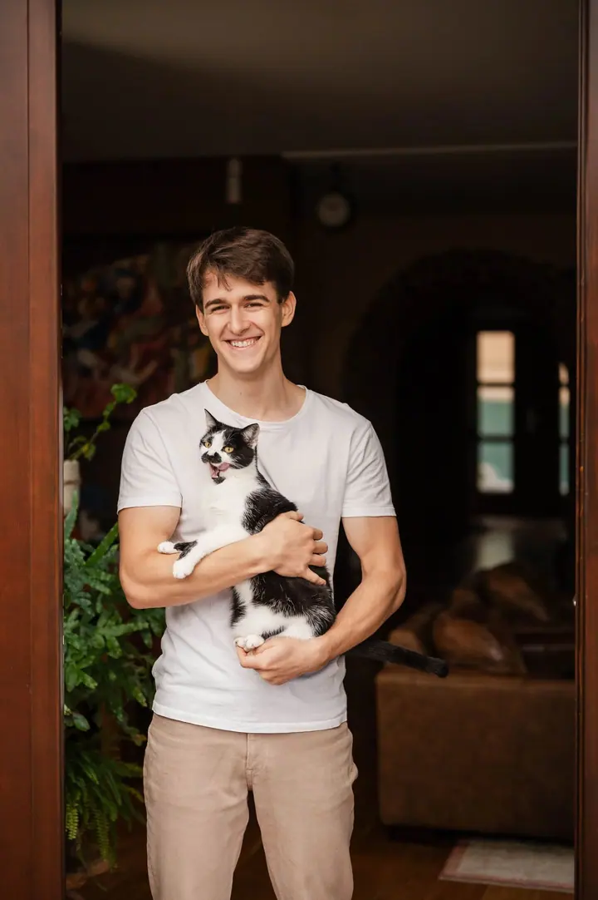
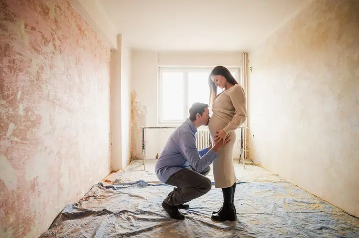

jedna
Svatební fotografie
Svatby fotím lidsky a přirozeně, bez strojených póz a s respektem k tomu, jak den plyne. Nejradši mám svatby v přírodě a lidi, kterým nevadí změna harmonogramu ani šaty od bláta.

Svatební a párový fotograf · Praha, Průhonice, celá ČR

Jmenuji se Oliver Beneš a fotím svatby, páry i firemní akce v Praze a okolí. Nejvíc mě baví upřímné momenty, smích, slzy a objetí, které nikdo nehraje do foťáku.
Více o mně
Co fotím
jedna
Svatby fotím lidsky a přirozeně, bez strojených póz a s respektem k tomu, jak den plyne. Nejradši mám svatby v přírodě a lidi, kterým nevadí změna harmonogramu ani šaty od bláta.
dvě
Hodina v klidu a v pohodě: malá procházka, spousta objímání a smíchu, ale i klasika pro babičky. Fotit můžeme v přírodě, ve městě, doma v teplákách nebo romanticky pod hvězdami.
tři
Fotoreportáže z konferencí, plesů a networkingů, k tomu portréty týmu a fotky z provozu. Fotky pro PR a sociální sítě můžete mít vybrané do 24 hodin.
Kočky jsou stejně jako pejsci členové rodiny, ale fotky na památku mají málokdy. Fotím je v klidu u vás doma.
0 % řekněte sýr, 100 % přirozenosti

Za objektivem
Jsem z Prahy, ale klidně za vámi vyrazím kamkoliv: do hor, do lesa, na statek nebo zámek, prostě tam, kde se budete cítit dobře. Abych se ale přiznal, nejvíc miluju svatby v přírodě.
Moje fotky nejsou o dokonalém makeupu nebo o perfektní póze. Jde mi o chvíle, kdy se objímáte s nejlepší kamarádkou před obřadem, kdy prstýnek nejde nasadit nebo kdy dojdou kapesníky během tatínkova proslovu. Během dne nechávám všechno plynout a zasáhnu jen tam, kde je to opravdu potřeba. Fotky upravuju tak, aby měly věrné barvy, a sem tam přihodím i černobílou pro trochu atmosféry.
Fotím na plný úvazek, živí mě to a zároveň mě to fakt baví. Neřekl bych o sobě, že jsem úplně umělecký typ. Mám spíš rád opravdovost, sílu momentu a lidi, kterým nevadí změna v harmonogramu a šaty od bláta.
Oliver
Ozvěte se přes formulář nebo mi rovnou zavolejte. Ještě než vezmu do ruky foťák, potkáme se, ať se trochu poznáme a řekneme si, co od sebe čekáte.
Projdeme spolu program, místo i vaše přání. U párového focení vymyslíme lokaci, která pro vás něco znamená.
Na svatbu přijedu s předstihem a pak nechám věci plynout. Žádné strojené pózy, jen vy, vaši blízcí a skutečné momenty.
Fotky dostanete ve vlastní online galerii, odkud je snadno nasdílíte i vytisknete.
Portfolio
Otázky
Tomu naprosto rozumím. Proto si před focením dáme setkání, kde si popovídáme o vás dvou, co máte rádi a kde je vám dobře. Podle toho pak vymyslíme samotné focení, takže to pak jinak než přirozeně nejde.
Hlavně nezapomeňte dýchat a nemračte se jako v občance. Naučený úsměv ani modelingové pohledy do dálky potřeba nejsou, ty nejhezčí výrazy přijdou samy. Po pár minutách vás to ani nenapadne.
Focení páru, předsvatební focení nebo žádost o ruku stojí 4 000 Kč. Za to máte 60 minut focení a 20 vybraných fotek v online galerii. Romantické focení pod hvězdami vyjde na 5 500 Kč a na focení žádosti o ruku dávám slevu 50 %.
Ano. Fotím hlavně v Praze a Průhonicích, ale po dohodě rád přijedu kamkoli v rámci České republiky.